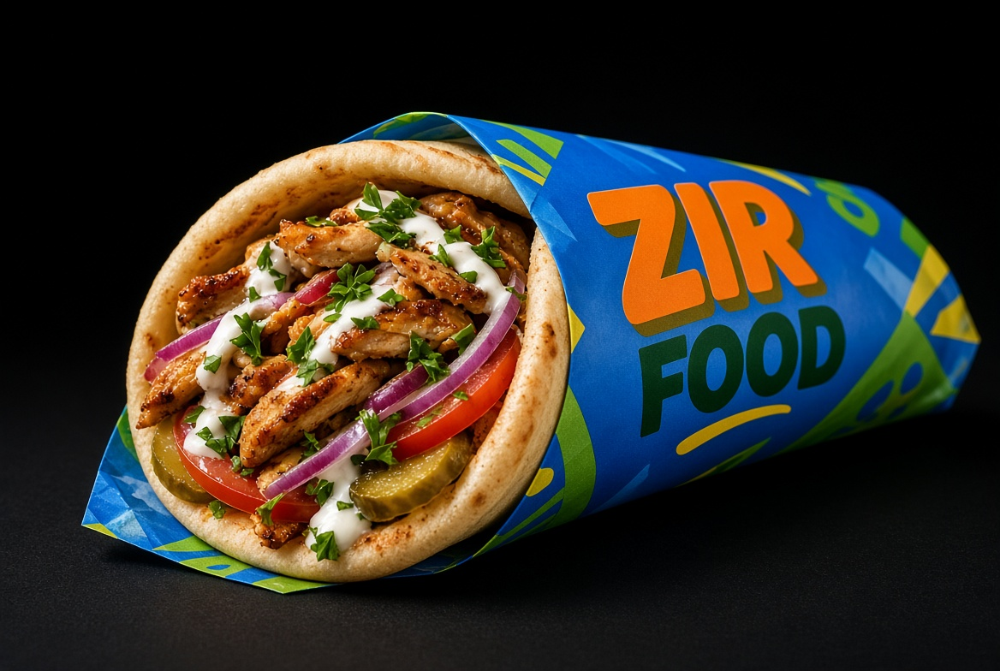
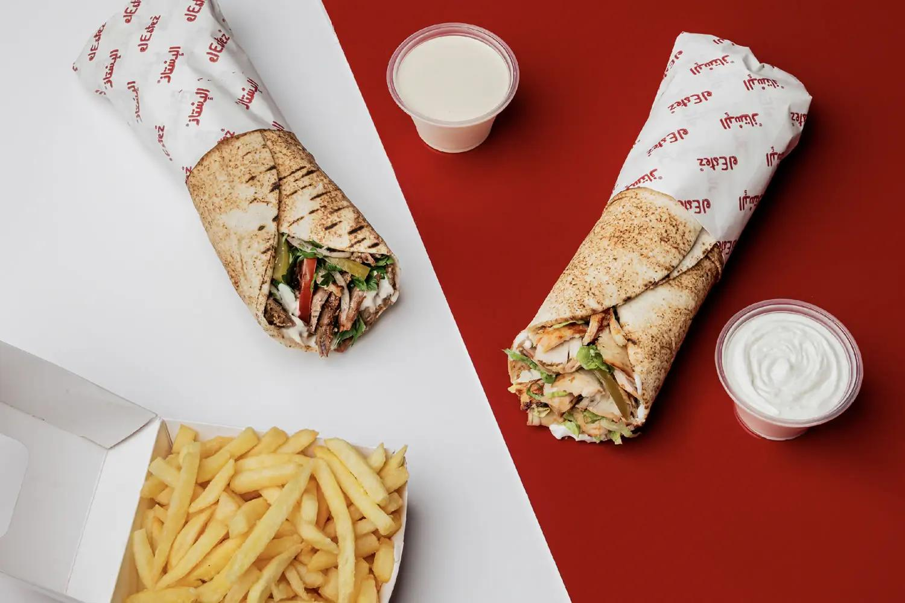
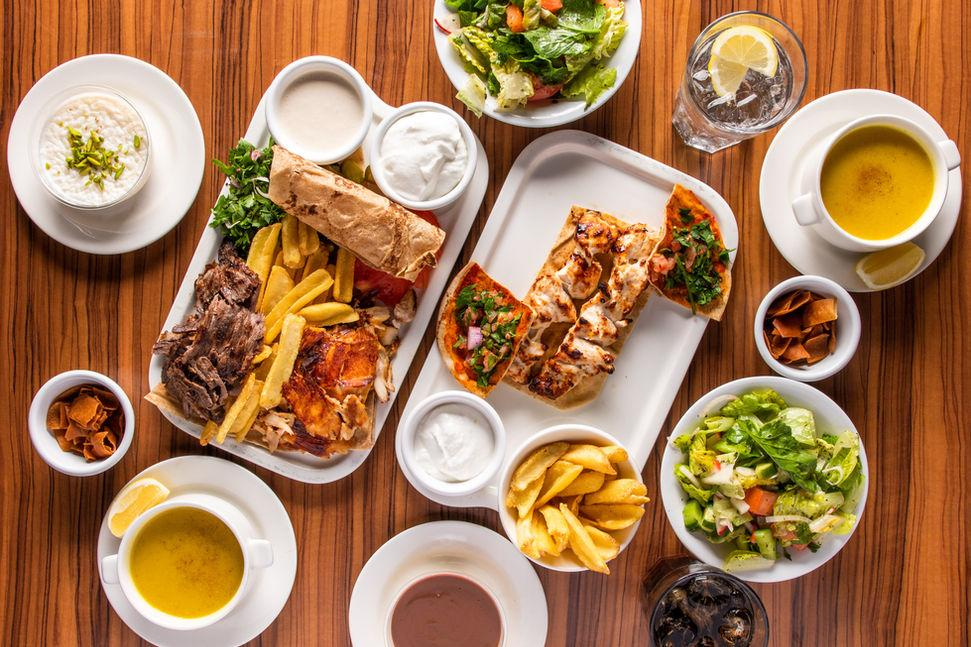
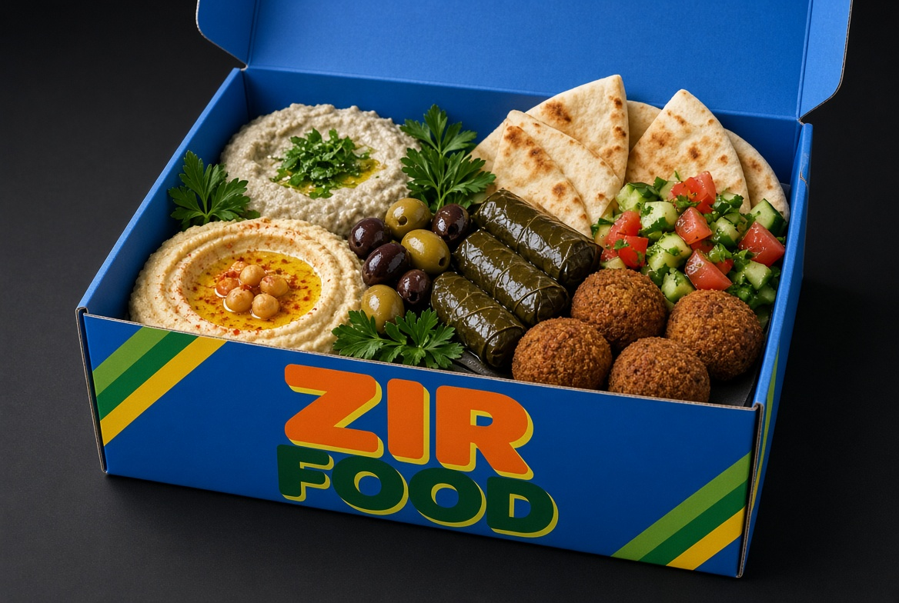

01
Nos Shawarmas
Une spécialité généreuse aux saveurs orientales.
Des saveurs authentiques, des recettes généreuses et une expérience gourmande à partager.


Chez ZIR FOOD, nous mettons à l'honneur la richesse de la cuisine libanaise. Des recettes savoureuses, des ingrédients soigneusement sélectionnés et une cuisine pleine de caractère.
Notre envie ? Vous faire découvrir ou redécouvrir les saveurs du Liban à chaque bouchée.
Explorer notre menu →Découvrez les spécialités qui font notre identité.

Une spécialité généreuse aux saveurs orientales.

Une spécialité incontournable de la cuisine libanaise.

Des saveurs variées à partager et à savourer.
Venez découvrir l'univers ZIR FOOD.
Nous retrouver